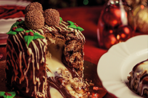
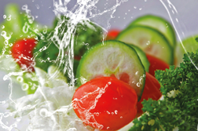

       <div class="view view-main">
        <!-- Initial Page, "data-name" contains page name -->
        <div data-name="recetarios" class="page">

          <!-- Scrollable page content -->
          <div class="page-content basico_nm">
            <!-- Link to another page -->
              <a href="/inicio/" class="link back cuentaicono2"><i class="back fas fa-arrow-circle-left"></i></a>

            <div class="logo_recetario"></div>
           <div class="niveles_nm">
               <a href="/producto/" class="link"><div class="imagen_descripcion3_nm">
                   
                   <div class="des_2"><p class="negro_nm1">Recetarios por producto</p>
                   <p class="blanco_nm1">aprovecha los ingredientes de tu despensa</p></div>
               </div></a>
           </div>
             <div class="niveles_nm">
               <a href="/pais/" class="link"><div class="imagen_descripcion3_nm">
                   
                    <div class="des_2"><p class="negro_nm1">Receta por país</p>
                        <p class="blanco_nm1">descubre los mágicos sabores del mundo</p></div>
               </div></a>
           </div>
             <div class="niveles_nm">
               <a href="/ocasion/" class="link"><div class="imagen_descripcion3_nm">
                   
                    <div class="des_2"><p class="negro_nm1">Recetas por ocasión</p>
                        <p class="blanco_nm1">La cultura y la gastronomía se unen para darte lo mejor</p></div>
               </div></a>
           </div>
            <div class="niveles_nm">
               <a href="/vege/" class="link"><div class="imagen_descripcion3_nm">
                   
                    <div class="des_2"><p class="negro_nm1">Recetas vegetarianas</p>
                        <p class="blanco_nm1">Aprovecha los ingredientes que tienes en tu despenza</p></div>
               </div></a>
           </div>
            <div class="niveles_nm">
               <a href="/reposteria/" class="link"><div class="imagen_descripcion3_nm">
                   
                    <div class="des_2"><p class="negro_nm1">Repostería</p>
                        <p class="blanco_nm1">Descubre los mágicos sabores del mundo</p></div>
               </div></a>
           </div>
          </div>
        </div>
      </div>
